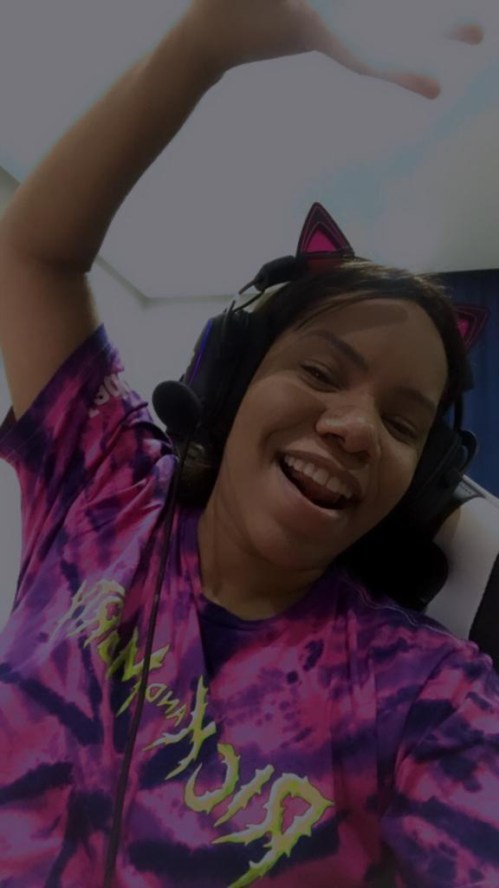

20 de Março de 2023
Como comecei a programar...

Bom, pra começar venho de migração de carreira...
Fiz cursos como Desing Gráfico, cheguei até a entrar na Faculdade de Arquitetura
porém não concluí, logo após fiz Técnico em Edificações e acabei conhecendo esse
universo "novo" que é a programação e estou amando esse aprendizado
diário com os desafios que são apresentados.
Porém sempre, lá no fundinho tive um "pé" em TI. E contando um pouco mais
sobre, desde criança fui observadora e como não tinha condições de ter um PC,
o que eu fazia?
- R: Simplesmente sentava ao lado e observava as pessoas mexerem e com o tempo
aprendi isso e muito mais com essas maquinas, minha relação com os sistemas era
praticamente uma "química platônica" hahaha 😅💚